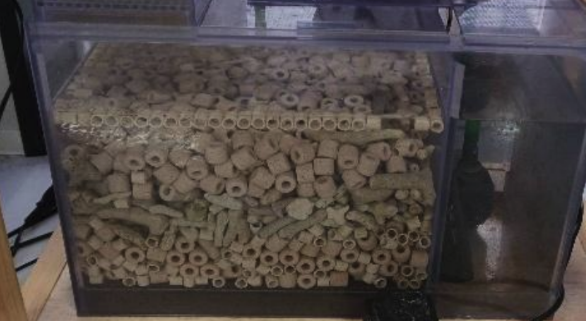
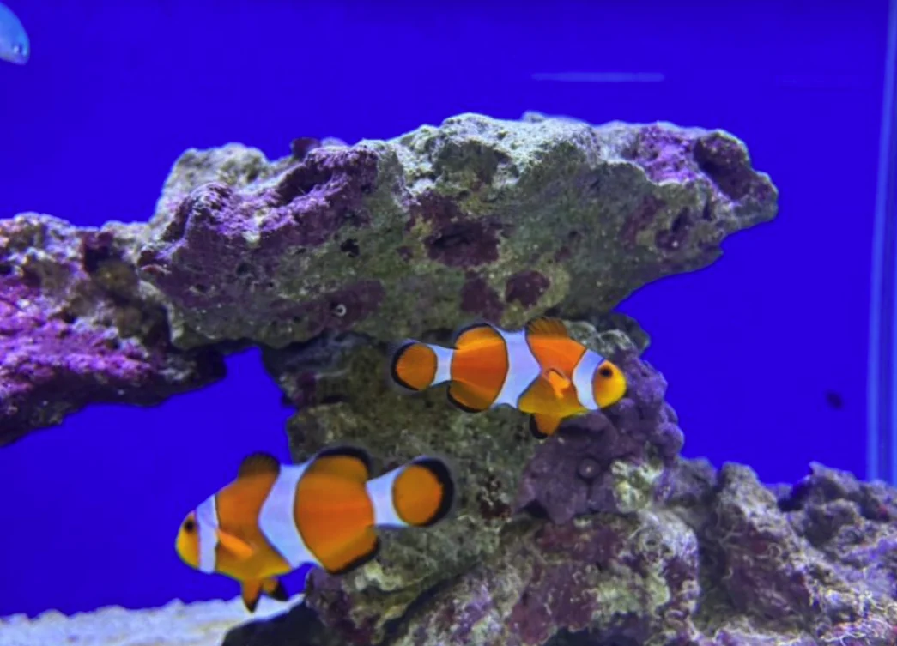
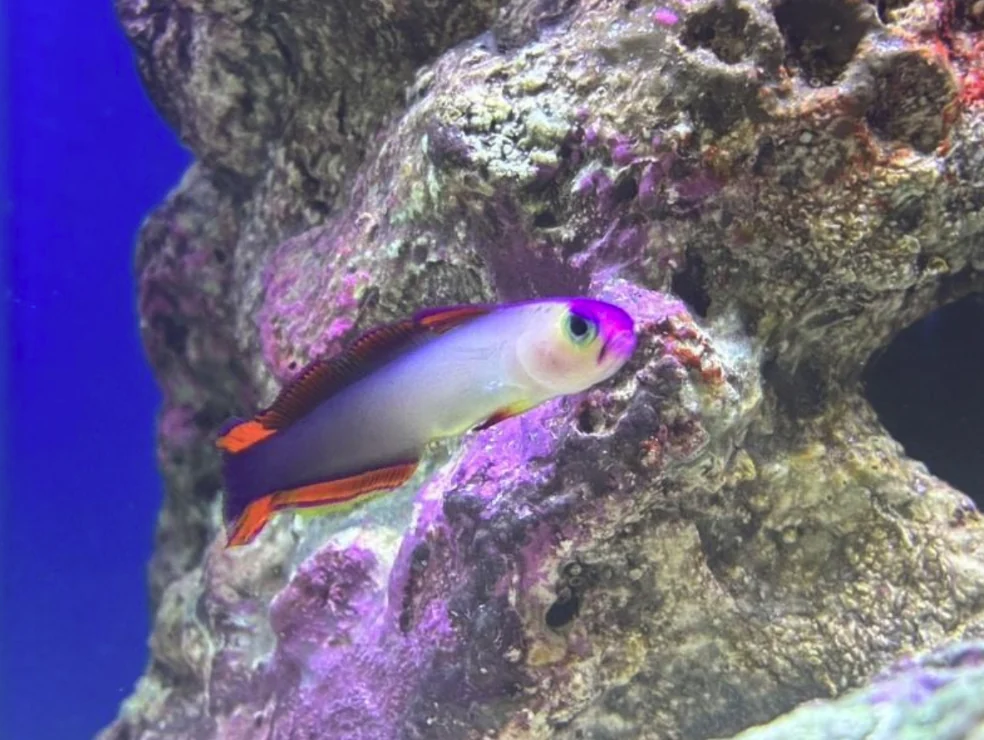
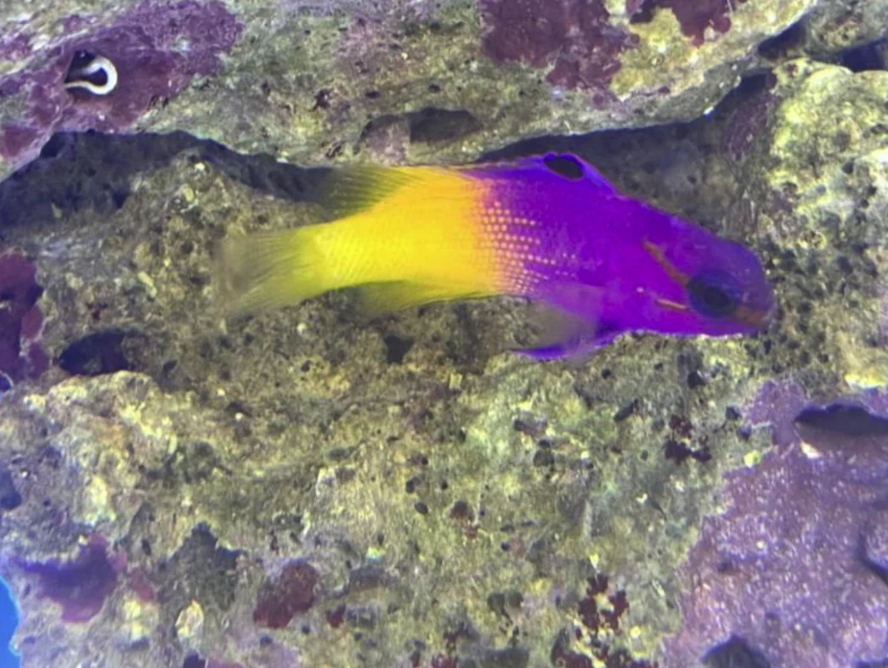

誰もが目を奪われる、
アクアリウムについて
中学三年 宮原 功貴
1.初めに
アクアリウムとは何か
水槽の中に人工的に海を再現し、海水魚やサンゴなどの海の生き物を飼育する趣味のことです。手軽に癒しの空間を作れることから近年特に人気が高まっています。
2.今年から始めたオーバーフロー水槽での熱帯魚(海水魚)飼育
今まで魚類班で飼っていた魚は、自分達で釣りや素潜りの採集で入手しましたが、アクアリウム水槽に入れた多くの魚は海水魚のショップで購入しています。もちろん、日本近海にいる魚も知れば知るほど面白く魅力的なのですが、サンゴ礁にいるような、映える魚を飼うことにも挑戦してみたかったのがきっかけです。そこで、より本格的な飼育環境としてオーバーフロー水槽を導入しました。
3.オーバーフロー水槽とは
海水魚飼育にはろ過が必要であり、様々なフィルターやろ材が存在します。その中でもダントツでろ過能力が高いのがオーバーフローという濾過の形です。オーバーフロー水槽には、ろ材をとにかくいっぱい入れられる、水量が多いため水質が安定しやすい、ヒーターなどの人工物を水槽台の下の濾過槽(サンプ)に隠せるのでスタイリッシュ、などの理由から難しい海水魚の飼育に使われることが多いです
←箱状のケースが濾過槽(サンプ)です

4.オーバーフロー水槽にいる生体紹介
ここではオーバーフロー水槽の中にいる生体の一部を紹介します。
どの魚も綺麗なので、是非じっくりと現物をご覧になってください。
・カクレクマノミ ギンポ目スズメダイ科クマノミ属
・アケボノハゼ スズキ目ハゼ亜目クロユリハゼ科ハタタテハゼ属
・ロイヤルグラマ スズキ目グラマ科グラマ属
5.まとめ
アクアリウム水槽を導入した今年の活動は、これまでの「自分たちで採集した魚を育てる」という魚類班のスタイルとは少し違う、新しい挑戦でした。岩のレイアウトや魚の色の組み合わせなど、景観づくりのセンスが問われる場面も多く、正直不安もありました。しかし、実際に水槽を作り上げていく中で、海水魚の美しさやアクアリウムならではの奥深さを強く感じることができました。
今回の興風祭では、そんな新しい試みの第一歩をお見せすることができたといます。これからはサンゴの飼育にも挑戦し、さらに魅力的な水槽づくりを目指していきます。来年の興風祭では、今年以上に成長したアクアリウムをお見せできるよう努力していきますので、ぜひ楽しみにしていてください。


